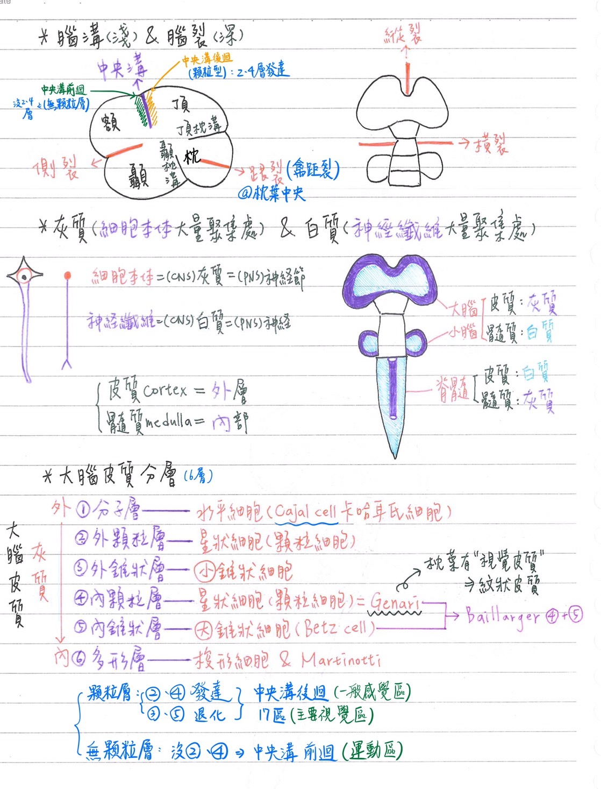
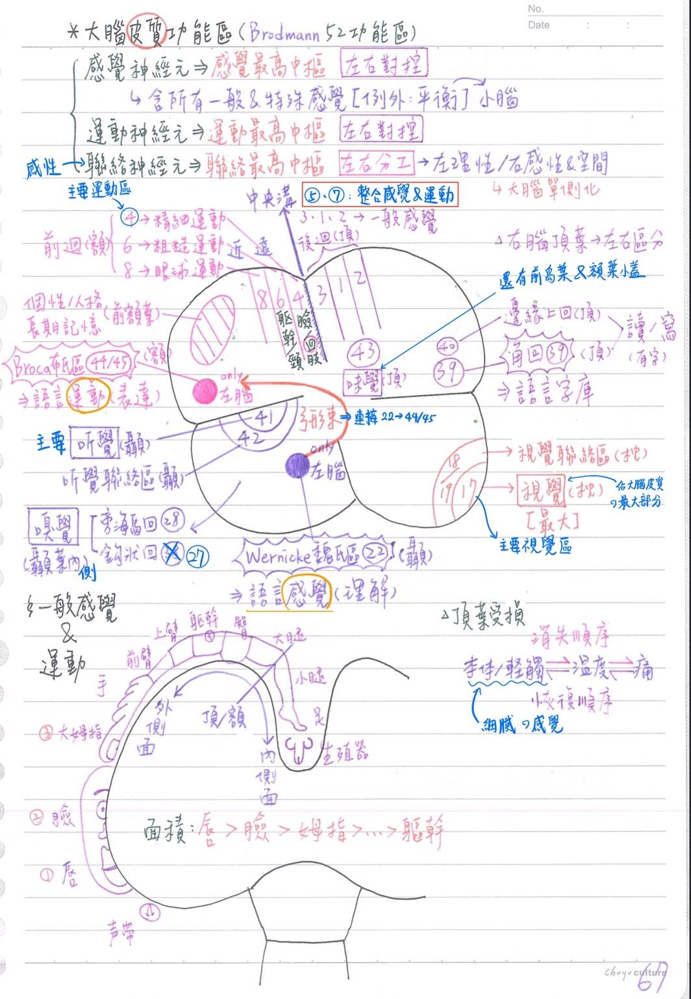
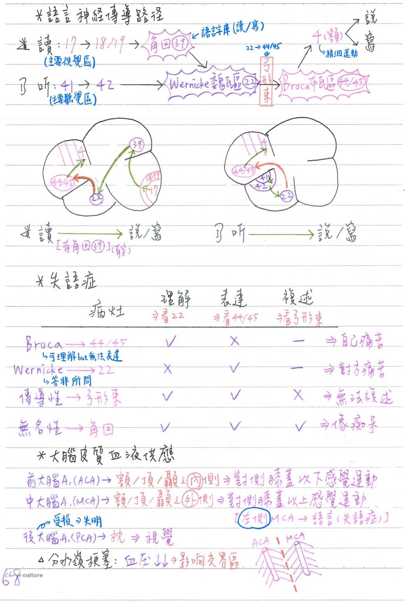

🧠 CNS-大腦：大腦皮質
大腦皮質(cerebral cortex)/灰質-概述
- 位於大腦外側
腦迴(gyrus)：皮質摺疊凸出部
腦葉(lobe)：列舉幾項
- 顳葉(temporal lobe)
- 額葉(frontal lobe)
- 頂葉(parietal lobe)
- 枕葉(occipital lobe)
- 島葉(insula)
[重點]腦溝(sulcus)：較淺之凹陷
- 中央溝(central sulcus)：分隔額葉/頂葉
- 頂枕溝：分隔頂葉/枕葉
- 顳枕溝：分隔顳葉/枕葉
[重點]腦裂(fissure)一較深凹陷
- 側裂(lateral fissure)：分隔額葉/顳葉
- 縱裂(longitudinal fissure)：分隔左/右大腦半球
- 橫裂(transversefissure)：分隔大腦/小腦
- 跟裂/禽距裂(calcarine fissure)：位於枕葉中央
大腦皮質之分層 [98年後沒考過] [分顆錐顆錐多 → 分科trick or treat多]
- 大腦皮質之功能單位：垂直柱(vertical.column)→為錐狀cell上下相連
- 典型(homotypical)：6層(layer)，由外而內依序為→
- 分子層(molecular)：主含水平細胞(horizontal cell/Cajal cell)
- 外顆粒層(external granular)：含小錐狀細胞 & 星狀細胞
- 外錐狀層(external pyramidal)：含小錐狀細胞(pyramidal)
- 內顆粒層(internal granular)：含星狀細胞(stellate cell)
- ★內錐狀層(internal pyramidal)/神經節層(ganglionic)：含大錐狀細胞(pyramidal cell)=★★[108-2]貝氏細胞(Betz cell)
- 多形層(multiform)：含梭形細胞(fusiform cell)& Martinotti
- 大腦皮質最厚部位：初級運動區
- 異型(heterotypical)
- 顆粒型(granular type)：
- 顆粒層(2、4層)發達；錐狀層(3、5層)退化
→2~5層融合成一明顯之顆粒層 - EX：中央溝後回(一般感覺區)、17區(主要視覺區)
- 顆粒層(2、4層)發達；錐狀層(3、5層)退化
- 無顆粒型(agranulartype)：
- 缺顆粒層(2、4層)
- EX：中央溝前回(運動區)
- [重點]古大腦(海馬形成)：3層(分子層、錐狀層、多形層)
- 顆粒型(granular type)：
- [重點]貝雅澤氏帶(band of Baillarger)
- 明顯水平纖維(丘腦皮質徑)構成→第4+5層
- 外帶(outer band)/根那利氏線(stria of Gennari)：第4層
- 在視覺皮質(枕葉)最明顯(肉眼可視)
→故視覺皮質又稱為紋狀皮質(striate cortex)
- 在視覺皮質(枕葉)最明顯(肉眼可視)
- 內帶(inner band)：第5層

大腦皮質神經元：5種
- ★錐狀細胞(pyramidal cell)：
- 數量最多
- 具頂端樹突(apical dendrite)，可延伸至大腦皮質表面
- 顆粒細胞(granular cell)/星細胞(stellate cell)
- 梭形細胞(fusiform cell)
- 水平細胞(horizontal cell)/卡哈氏細胞(Cajal cell)：
- 最多突觸，位於最外層(分子層)
- 馬汀諾蒂氏細胞(Martinotti.cell)
[超級重點]大腦皮質功能區(Brodman,1909, 分成52功能區)=新大腦
[每年考]感覺神經元
- 視覺：枕葉，跟裂兩側
- 主要視覺區：★17
- 視覺聯絡區：18、19
- ★[108-1]辨別物體、景深、顏⾊
- 接收來自Area 17的訊息，並與其他皮質區及丘腦枕部進行雙向聯繫
- 視覺區佔據大腦皮質之最大部份
- 聽覺：★[107-2]顳葉
- 主要聽覺區：41 (★[107-2]★[110-1]@superior temporal gyrus)
- 聽覺聯絡區：42、22
- 味覺：頂葉
- 主要味覺區=43
- 味覺皮質包括：★前島葉(anterior insula, AI) & 額葉小蓋(frontal operculum, FO)
- 嗅覺：嗅葉(顳葉內側)
- 旁海馬迴(內嗅皮質)：28
- 鉤狀迴(梨狀皮質)：27
備註
https://www.kenhub.com/en/library/anatomy/brodmann-areas
眾說紛紜
也有資料說uncus是旁海馬迴的最前端...
- 一般感覺：頂葉
- 主要體感覺區(primary somatosensory area)=3、1、2(位於中央溝後方)
- 膝部以下 & 生殖器感覺→投射至頂葉內側面
- 膝部以上感覺→投射至頂葉外側面(底部)
- 唇、臉、姆指佔大面積→感覺較細密；軀幹佔小面積→感覺較粗疏
- [重點]頂葉受損時，感覺消失的順序(先→後)：本體/輕觸覺→溫度→痛覺
- 恢復順序恰相反：痛覺最早恢復
- ★★體感覺聯絡區(somatosensory association area = posterior parietal cortex)：5、7
- 在★體感覺區(3,1,2)後方
- ★也可發出神經纖維⇒形成皮質脊髓徑
→整合感覺與運動，如★眼手協調(visuo-motor coordination)等
- 主要體感覺區(primary somatosensory area)=3、1、2(位於中央溝後方)
運動神經元：額葉(4→精細、6→粗糙、8→眼球) [★位於中央溝前回]
- 主要(初級)運動區(primary motor)：★4
- 調控精細運動：身體遠端(臉、四肢)肌肉的運動
- ★可接受丘腦腹外側核(VPL)傳入之訊息
- 前運動區(premotor)+補充運動區(supplementary motor，位於內側)：6
- 調控粗糙運動：身體近端(軀幹&頸)肌肉的運動
- 規劃複雜動作之細部順序
- 額葉動眼(視野)區(frontal eye field)：8
- 控制眼球運動

聯络神經元(=高級皮質功能，high corticol function)
- 大腦單側化(lateralization)：左、右大腦分工互補
- 左大腦：理性(數、理、化、邏輯、法律、語言)
=優勢大腦= 外顯(categorical)大腦=條理分析
- 右大腦：感性(音樂、美術、創作、想像力)+空間關係(visuospatial)
=心象(representational)大腦
- 左大腦：理性(數、理、化、邏輯、法律、語言)
- 語言區：★★左大腦 [補充：★70%左撇子的優勢大腦還是在左腦(不是右腦歐)]
- ★額葉Broca area：45/44；語言運動(表達)區→負責語言之表達(將思想變成語言)
- ★★顳葉Wernicke area：22；語言感覺(理解)區→負責語言的理解
- 可擴及角迴(angular，39，頂葉下方)&邊缘上回(supra-marginal，40，頂葉下方)：參與讀(reading)/寫(writing)
- ★優勢大腦的角回&邊緣上回損傷：無法讀(alexia)&無法寫(agraphia)
- 22區與45/44區以弓形束(arcuate fasciculs)相連
- [重點]語言的神經傳導路徑(如圖)
- [重點]失語症(aphasia)：語言表達障礙
類型 病灶 理解
(22)表達
(44/45)複誦
(弓形束)Naming 備註 ★
Broca
運動型失語症★44, 45 + +/- 可理解但無法表達 ★★★[110-2]
Wernick
感覺型失語症22 + (新語彙) 可表達但無法理解
(★答非所問)接收性(receptive)
★★★★★(Wernick)+
角回(39)
緣上回(40)+ 只要無法理解的都算，含Wernick ★★[109-2]
傳導性(conduction)弓形束 + + +/- 沒辦法複誦 ★[110-2]
無名性(anomic)角回(39) + + + 無法命名 全面性(global) 左大腦
大範圍全都不行 - [重點]前額葉(prefrontal)：9、10
- 掌管：個性或人格(personality)、智慧、長期記憶
- 頂葉(右大腦)：左右區分
腦部血流供應 [考到爆]
- 前大腦動脈(ACA)：
- 供應：
- ★★[109-2]胼胝體(因為偏大腦內側)、扣帶迴、積核(nu. accumbens)
- 基底核：尾狀核&豆狀核前部、內囊前肢
- 額葉、頂葉、顳葉之內側
- 前大腦A阻塞/破裂：對側小腿及會陰之感覺(頂葉)&運動(額葉)功能喪失
- 前大腦A栓塞：可能造成失明(視N@視交叉部時由ACA供應)
- 供應：
- 中大腦動脈(MCA)：
- 供應：
- 額葉、頂葉、顳葉之外側
- 大部分/中央部分基底核(★[104-2]豆狀核之主要血流來源)
- ★中大腦A阻塞/破裂：
- ★對側身體感覺及運動功能喪失(小腿及會陰除外)
- 左側MCA破裂：★★失語症(語言區在左大腦)
- 中大腦A栓塞：可能造成失明(MCA供應視交叉之後)
- 供應：
- ★後大腦動脈(PCA)：供應★★枕葉、★★丘腦、中腦
- 後大腦A阻塞/破裂：視覺受損
- 分水嶺梗塞(watershed infarction)：當血壓大幅下降(BP<50~60mmHg)
→大腦動脈支配之交界區(中大腦A與前、後大腦A交界處)最先受影響
(因為是末梢，血液供應較少)
- 前脈絡叢動脈(anterior choroid a.)：內頸A的直接分支
- 沿optic tract後外側行，經側腦室下角，終止於脈絡叢
- 供應：optic tract、外側膝狀體、★內囊後肢(主要)、側腦室脈絡叢、大腦腳底的中1/3 & 蒼白球

📖 書本補充：與筆記不同或筆記沒寫到的地方
⚠️
以下為對照書本後整理，筆記原文未更動。標「筆記 vs 書」的是兩邊寫法不同、建議回頭確認的地方。
大腦皮質的分層（p.430）
- 書對各層的描述（補筆記沒寫的部分）：
- 分子層：細胞很少，主要是與表面平行的軸突及錐狀細胞的樹突。
- 外顆粒層：顆粒細胞和錐狀細胞。
- 外錐狀層：中小型錐狀細胞，主要發出皮質到皮質的纖維（corticocortical fiber）。
- 內顆粒層：幾乎都是顆粒細胞，來自丘腦的感覺訊息主要投射到這層；Baillarger 外帶在此，在初級視覺皮質特別明顯＝Gennari 紋。
- 內錐狀層：中大型錐狀細胞，下行到基底核、腦幹和脊髓；Baillarger 內帶在此。
- 多形層：錐狀細胞和梭形細胞。
- 書的提示：
- 錐狀細胞樹突往上（表面）走、軸突往下進入白質（小腦的蒲金氏細胞也一樣），形成皮質脊髓徑等纖維；大型錐狀細胞（主要在第5層）＝Betz 細胞。
- 六層不必硬背，但要知道主要細胞是錐狀細胞與顆粒細胞。
- Baillarger 內、外帶由有髓鞘軸突構成，主要是丘腦傳入纖維，所以在感覺區較明顯。
大腦皮質的類型（p.431）
- 新皮質（neocortex）＝同皮質（isocortex），6層，佔大部分大腦皮質。
- 異皮質（allocortex）再分兩種（筆記只寫「古大腦3層」）：
- 古皮質（archicortex）3層：齒狀回、海馬回。
- 舊皮質（paleocortex）3–5層：海馬旁回、鉤部（uncus）。
- 新皮質中的異型皮質：
- 非顆粒性：大型錐狀細胞多，第 III、V 層特別厚，集中在運動區。
- 顆粒性：小型細胞多，第 IV 層特別厚，集中在感覺區。
- 同型皮質：六層清楚可辨，大部分聯絡區屬此型。
- 記憶法：感覺區錐狀細胞少、看起來多是圓圓的顆粒細胞→顆粒性；運動區錐狀細胞特別多→非顆粒性。
重要的 Brodmann 區（p.432–433）
- 解剖位置（筆記多只寫腦葉）：
- 4 區＝中央前回＋前中央旁小葉；3、1、2 區＝中央後回＋後中央旁小葉。
- 6 區＝額上回和額中回。
- 44、45 區＝額下回的島蓋部（44）與三角部（45）（左側）。
- 5、7 區＝頂上小葉；39 區＝頂下小葉的角回。
- 17 區＝距狀溝沿線；18、19 區包圍 17 區。
- 22 區＝顳上回，聽覺連絡區，其後部稱為 Wernicke 區。
- 筆記 vs 書：主要聽覺區 41，筆記標「@superior temporal gyrus」；書上寫 41 區位於顳橫回（transverse temporal gyri），顳上回則是 22 區（聽覺連絡區／Wernicke 區）。考題 109-1-15 的答案也是顳橫回。Claude 註：顳橫回位於顳上回朝向外側溝的上表面，所以兩種說法是範圍大小不同，作答時遇到兩者並列的選項，選「顳橫回」較精確。
- 筆記 vs 書：額葉眼動區，筆記寫 8 區；書的表格把額葉眼動區列在 6 區之內（6 區＝運動前區或輔助運動區，額葉眼動區位在此區）。
- 筆記 vs 書：筆記寫 4 區「可接受丘腦腹外側核（VPL）」；書上考題 108-2-15 的英文是 ventral lateral nucleus（VL）。VPL（腹後外側核）是體感覺的中繼核，投射到 3、1、2 區，兩者不要混淆。
- 書的提示：最常考的是主要區的 Brodmann 編號以及位在哪個腦葉；Broca（表達、運動）與 Wernicke（接受、感覺）各在哪個腦葉。
大腦動脈環（p.423–424）
- 前循環（內頸A）：大腦前、大腦中、前交通、後交通、脈絡叢前動脈；後循環（椎A）：大腦後、小腦上、小腦下前（AICA）、小腦下後（PICA）、基底、脊髓前、脊髓後（脊髓後A源自椎A或 PICA）。
- 書以紅字標出組成威利氏環者：大腦前、前交通、後交通、大腦後，另外也把脈絡叢前動脈標成紅字。Claude 註：一般教科書的威利氏環組成是大腦前A、前交通A、內頸A末段、後交通A、大腦後A，不含脈絡叢前動脈；書上圖103的虛線環也沒有經過脈絡叢前動脈，這裡的紅字應是排版錯誤。
- 書的提示：
- 動眼神經夾在大腦後A與小腦上A之間；小腦下前A的前方為外旋神經。
- 脈絡叢前動脈供應：側腦室下角的脈絡叢、內囊後肢、丘腦和海馬回的一部分。
- 記憶法：椎動脈由下往上走，先碰到小腦下面（偏後）→先發出 PICA，再往前上走才發出 AICA。
腦葉的血液供應（p.425–426）
- 書的表格（前＝ACA、中＝MCA、後＝PCA）：
- 額葉：外側＝中；內側、下方＝前。
- 頂葉：外側＝中；內側＝前。
- 顳葉：外側＝中；內側及下方＝後；顳極＝中。
- 枕葉：外側＝中；內側及下方＝後。
- 邊緣葉：扣帶回＝前；海馬旁回＝後。腦島＝中。
- 筆記 vs 書：筆記寫 ACA 供應「額葉、頂葉、顳葉之內側」；書上顳葉內側及下方是由大腦後動脈供應，ACA 只供應額葉（內側、下方）與頂葉內側。另外筆記寫 PCA 供應枕葉，書上補充枕葉外側面是中大腦A，PCA 管的是枕葉內側及下方。
- 書的提示：
- 大腦外側面幾乎都由 MCA 供應。
- 扣帶回及胼胝體由 ACA 供應。
- 負責下肢運動與感覺的前、後中央旁小葉在額、頂葉內側，所以 ACA 損傷影響下肢。
- MCA 供應外側面，損傷會傷及 Broca 區（額葉外下方）與 Wernicke 區（顳葉）。
- 內囊：上半部由 MCA 供應；下半部的前肢由 ACA、後肢由脈絡叢前動脈供應。
📝 書中歷屆考題（點選答案作答）
101-1-20p.427
下列何者阻塞時，最可能造成右側肢體無力及運動型失語症 (Broca's aphasia)？
💡 Broca 區在左額葉外下方，由大腦中動脈供應。
103-1-1p.427
左側中大腦動脈 (middle cerebral artery) 阻塞，最可能造成下列何種症狀？
💡 MCA 供應腦葉外側面；下肢的運動與感覺區在內側的前、後中央旁小葉，由大腦前動脈負責。
104-2-1p.427
豆狀核 (lenticular nucleus) 之血流，主要來自下列何者之深部分支 (deep branch)？
💡 豆狀核和內囊的血液大部分來自大腦中動脈。
105-1-1p.427
丘腦之血流主要來自下列何者之深部分支 (deep branch)？
💡 丘腦位在大腦前、中動脈的後方，血液大部分來自大腦後動脈。
105-1-2p.427
Corpus callosum 之血流主要來自下列何者？
109-2-14p.428
胼胝體 (corpus callosum) 的主要血流供給來自下列何動脈？
105-2-3p.428
上段頸部脊髓之血流，主要來自下列何者？
💡 來自左右椎動脈的分支會合成脊髓前動脈。
108-1-31p.428
下列何者是單一並沒有成對的構造？
💡 脊髓後動脈成對，源自椎動脈或小腦下後動脈。
109-1-1p.428
下列何者供應內囊後支 (posterior limb of internal capsule) 之血流？
109-2-18p.428
大腦初級視覺皮質 (primary visual cortex) 之主要血流來自何處？
💡 初級視覺皮質在枕葉，血流主要來自大腦後動脈。
110-2-1p.429
下列何者不是內頸動脈的分支？
💡 前交通動脈連接兩側大腦前動脈，不是直接來自內頸動脈。
112-1-6p.429
下列何者供應內耳膜迷路 (membranous labyrinth) 的血液？
💡 迷路動脈來自基底動脈。
106-1-11p.434
下列何構造損傷，最可能導致感覺型失語症 (sensory aphasia)？
110-1-18p.434
關於大腦皮質之布洛卡區 (Broca's area) 的敘述，下列何者錯誤？
💡 布洛卡區在額下回；顳上回是 Wernicke 區的位置。
103-2-1p.434
下列有關初級視覺皮質之敘述，何者錯誤？
💡 單側視覺皮質的訊息來自兩側眼球（對側視野）。
106-1-14p.434
初級視覺皮質 (primary visual cortex) 位於下列何 Brodmann area？
108-1-13p.434
關於視覺皮質 (visual cortex) 的敘述，下列何者錯誤？
💡 視覺聯合皮質為 18、19 區，位在枕葉。
113-1-2p.435
下列何者主要位於大腦半球的內側面，其周圍是初級視覺皮質 (primary visual cortex)？
💡 初級視覺皮質位在距狀溝的兩側。
106-1-12p.435
下列何者屬於味覺皮質區？
111-1-3p.435
下列大腦皮質 (cerebral cortex) 的那一區負責控制兩眼外側注視 (lateral gaze) 的動作？
108-2-15p.435
關於大腦皮質 Brodmann area 4 之敘述何者錯誤？
💡 第4區是主要運動區，位在中央前回。
109-1-15p.435
丘腦內側膝狀體 (medial geniculate body of thalamus)，主要投射至下列何處？
💡 內側膝狀體傳聽覺，投射到顳橫回（主要聽覺區，41區）。
110-2-13p.435
下列何種訊息不經由丘腦 (thalamus) 投射至大腦皮質？
💡 嗅覺經嗅徑及內、外側嗅紋直接投射到皮質，不經丘腦。